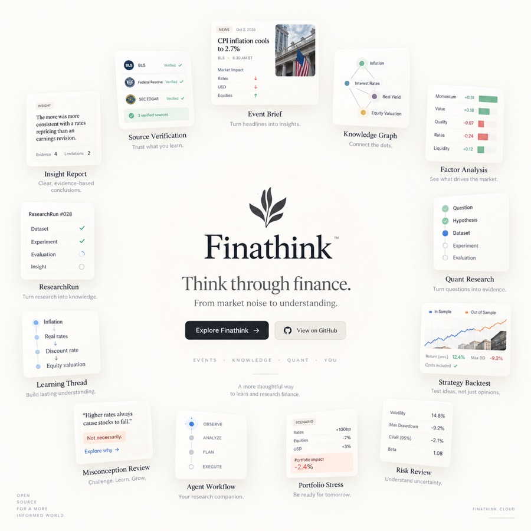
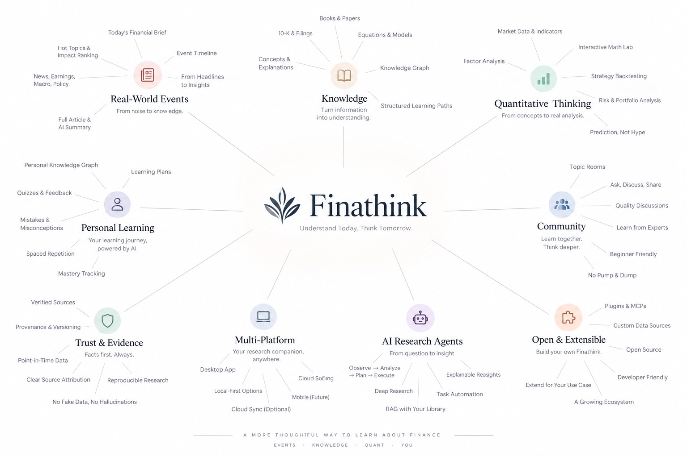

Evidence first
Captured source records stay distinct from interpretation, unknowns, and hypotheses.
Finathink · Financial Research Optimizer
From market noise to understanding: move from a captured event to evidence, math, code, quantitative research, paper-only strategy work, and your own learning history.


Static launch frames with a restrained gradient transition. The motion is a welcome cue, not a data visualization.
Captured source records stay distinct from interpretation, unknowns, and hypotheses.
Backtests, OOS checks, paper replay, and limitations are visible. Brokers and real-money execution are absent.
Personal research stays local until you choose an allow-listed projection with explicit consent.
Reality loop
Event → Evidence → Understanding → Quant → LearningStrategy loop
Idea → Feature → Math → Code → Backtest → OOS → Paper → Learning